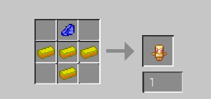
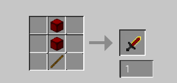
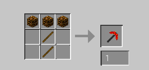
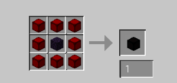
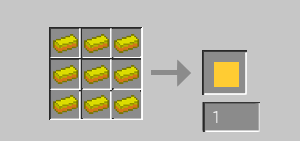
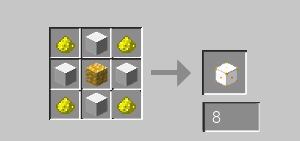
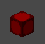
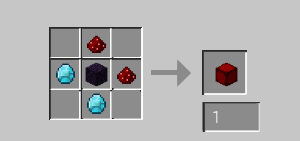

The recipes to craft things like sticks will not be displayed because they are vanilla and not part of the mod. For help on that, visit the Minecraft Gamepedia.
If an item in a recipe is grey and underlined, then it is part of the mod and has its own recipe. (all other text is 'silver')
The multiplier next to a recipe shows how many will be crafted. eg: Glowblock x8 gives you 8 Glowblocks.
Health Totem
4 Gold Ingots, 1 Lapis Lazuli.
Red Matter Sword
2 Red Matter Blocks, 1 Stick.
Magma Pickaxe
3 Magma Blocks, 2 Sticks.
Dark Matter Block
8 Red Matter Blocks, 1 Obsidian.
Gold Cast
9 Gold Ingots.
Glowblock x8
4 Glowstone Dust, 4 White Concrete, 1 Glowstone.
Red Matter Block
 An ore that can be found from Y60 to Y1, in max groups of 8.
Can also be crafted with 1 Obsidian, 2 Redstone, 2 Diamonds.